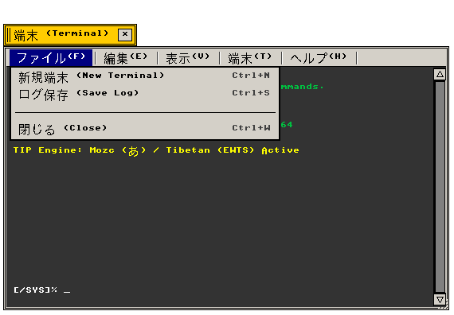
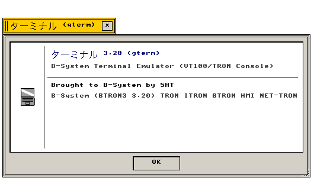

端末 (Terminal)
ANSI エミュレータ · UTF-8/TRONコード · 透過フレームバッファ · 多重配色
POSIX CLIシェルおよびT-Kernelコンソールを統合する高機能端末エミュレータ
"Integrated ANSI terminal emulator bridging POSIX shell environments and T-Kernel consoles."
← アプリケーション一覧 (Applications Index)
端末（Terminal） — 端末（Terminal）は、ANSI制御シーケンス、UTF-8およびTRON Code文字体系、多重カラーパレット、可変スクロールバックバッファをサポートするB-System標準端末エミュレータです。
"Graphical terminal console featuring ANSI escape decoding, ring-buffered history, and configurable phosphor themes."
画面プレビュー (Screen Preview)

実機描画フレームバッファより自動抽出されたBTRON端末エミュレータ GTerm (ファイルメニュー展開・シェル対話表示)

実機描画フレームバッファより自動抽出された透過バージョン情報ダイアログ (About gterm)
概要 (Overview)
端末（Terminal）は、ANSI制御シーケンス、UTF-8およびTRON Code文字体系、多重カラーパレット、可変スクロールバックバッファをサポートするB-System標準端末エミュレータです。
"Graphical terminal console featuring ANSI escape decoding, ring-buffered history, and configurable phosphor themes."
1. メニュー構造と操作体系 (Menu Architecture & Operations)
Terminal が提供する標準メニューバー構造および操作体系の仕様。
"Standard menu bar hierarchy and interactive command bindings."
| メニュー項目 |
機能説明 (Functional Description) |
技術仕様・C99実装 (C99 Architecture) |
| 端末 (Terminal) |
新規セッション、バッファクリア、スクロールバックリセット、閉じる |
src/apps/gterm.c |
| 編集 (Edit) |
テキストコピー、貼り付け、全選択 |
クリップボード連携 |
| 設定 (Settings) |
配色テーマ切替、フォントサイズ変更（12/16/20px）、透過度設定 |
src/settings/terminal.c 連携 |
| ヘルプ (Help) |
バージョン情報（Nano About Box 420×170px） |
app_menu_create_about_dialog |
2. 機能仕様とアーキテクチャ (Functional & Architecture Specifications)
Terminal アプリケーションの内部構造、データモデル、およびシステムコール仕様。
"Internal architectural components, memory models, and system call bindings."
| コンポーネント・機能名 |
動作概要と機能仕様 (Functional Specification) |
技術仕様・C99構造体 (C99 Implementation) |
| ANSI 制御シーケンス |
VT100/xterm互換エスケープコード処理、SGR 16色テキストカラー、カーソルアドレッシング。 |
エスケープパーサー FSM |
| 5大配色テーマ |
Matrix Green、Amber CRT、White on Black、Cyan on Navy、Paper Light を即時切替可能。 |
TerminalConfig.theme |
| リングバッファ履歴 |
100行 / 300行 / 1000行 のメモリ効率の高い循環スクロールバックバッファ。 |
メモリプール自動リサイクル |
| 半透明背景合成 |
不透明、20%減光、40%減光のアルファ合成フレームバッファ描画。 |
drw_rec アルファブレンド |
関連コンポーネント (Related Components)